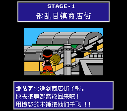
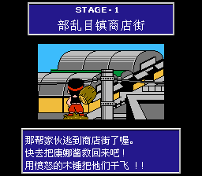
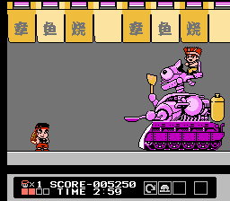
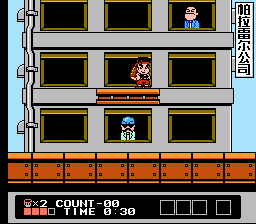
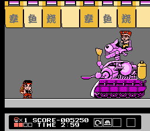
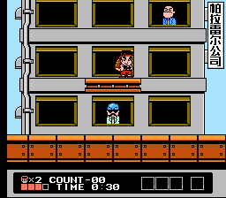
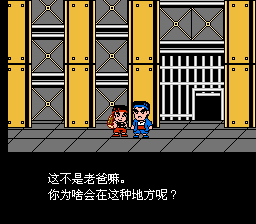
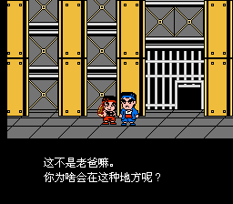
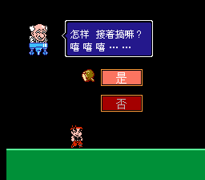
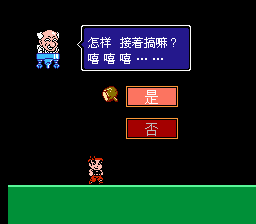

FC 大力工头 阿源君2 赤毛弹的逆袭


 
 
 
 

【汉化名单】
破解：MEZARANSU
翻译：拒绝融化
美工：拒绝融化
测试：拒绝融化
【iNES信息】
1、
Mapper：065（H3001）
PRG：256K
CHR：256K
2、
Mapper：005（MMC5）
PRG：256K
CHR：256K
【免责声明】
本游戏仅供研究用
禁止用于商业用途
游戏原名：
Daiku no Gen-san 2 - Akage no Dan no Gyakushuu
大工の源さん２ 赤毛のダンの逆襲
好的同学们！新汉化搞起！这次为同学们带来的是FC平台的大力工头阿源君2代的汉化版喔！虽然本作口碑和知名度都没有初代好，但作为系列的正统二代作品，喜欢这个系列的玩家也是不容错过的喔！还有就是本作的难度那可比初代不知高到哪里去了(其实也没有那么严重啦！)。撒！直面挑战吧少年！
在初代中被阿源君揍得鼻青脸肿的红发少年，通称“赤毛弹”，终于要开始对阿源君进行打击报复啦！作为阿源君的宿敌(自称)，怎能手下留情！除了自己最擅长的雷管攻击，这一次他更是准备了大量的载具(机体？)来对付这该死的阿源君！而阿源君面对着自信满满，动机明确的这个“好像在哪见过”的红毛小子，也抡起了自己的木锤！然而就在这两人火热撕逼的同时，一个幕后的大佬已然渐渐浮现……
游戏的玩法完全沿用了初代的设计，道具也基本没变，但是游戏的引擎和操作手感却大相径庭。游戏全8关，中间穿插有奖励小游戏关卡，关卡设计上对比初代还是很良心的！其中还有强制卷轴关卡和两段飞行关卡，也为游戏流程提供了更丰富的体验！(竖屏的强制卷轴那可是相当的硬核喔！颤抖吧！)和初代相同，打通一周目之后有难度增加的二周目，只有打通二周目才能看到真结局的喔！
这一次又和meza合作了，虽然一直被说成狗币翻译狗币美工，但是自己还是很开心的2333(？？？)。毕竟是自己很喜欢的game，通过自己的努力不断地让game趋于完美，像艺术品一样，这个过程真的很让人满足。算起来，自己加入Advance汉化组刚刚好一整年的时间(入群时间2018/07/17)。其实最开始就是感觉门槛低，想进来掺和掺和233进来之后的印象是组里氛围很好，大家都很和睦，每天都在开开心心地汉化，所以就越来越投入了。自认为这段时间也或多或少帮了上了一些忙。但是后来也气走了大佬非常惭愧。有时候不禁在想，在那条我没有加入Advance汉化组的世界线上，汉化组现在又是什么样子呢？是比现在更好还是更差？无论如何，过去无法改变，未来无法预知，自己希望Advance汉化组能保持住闪光点，继续走下去！
扯得有点远了，那么以上就是这次分享的game啦！希望同学们能够喜欢！
——拒绝融化
在初代中被阿源君揍得鼻青脸肿的红发少年，通称“赤毛弹”，终于要开始对阿源君进行打击报复啦！作为阿源君的宿敌(自称)，怎能手下留情！除了自己最擅长的雷管攻击，这一次他更是准备了大量的载具(机体？)来对付这该死的阿源君！而阿源君面对着自信满满，动机明确的这个“好像在哪见过”的红毛小子，也抡起了自己的木锤！然而就在这两人火热撕逼的同时，一个幕后的大佬已然渐渐浮现……
游戏的玩法完全沿用了初代的设计，道具也基本没变，但是游戏的引擎和操作手感却大相径庭。游戏全8关，中间穿插有奖励小游戏关卡，关卡设计上对比初代还是很良心的！其中还有强制卷轴关卡和两段飞行关卡，也为游戏流程提供了更丰富的体验！(竖屏的强制卷轴那可是相当的硬核喔！颤抖吧！)和初代相同，打通一周目之后有难度增加的二周目，只有打通二周目才能看到真结局的喔！
这一次又和meza合作了，虽然一直被说成狗币翻译狗币美工，但是自己还是很开心的2333(？？？)。毕竟是自己很喜欢的game，通过自己的努力不断地让game趋于完美，像艺术品一样，这个过程真的很让人满足。算起来，自己加入Advance汉化组刚刚好一整年的时间(入群时间2018/07/17)。其实最开始就是感觉门槛低，想进来掺和掺和233进来之后的印象是组里氛围很好，大家都很和睦，每天都在开开心心地汉化，所以就越来越投入了。自认为这段时间也或多或少帮了上了一些忙。但是后来也气走了大佬非常惭愧。有时候不禁在想，在那条我没有加入Advance汉化组的世界线上，汉化组现在又是什么样子呢？是比现在更好还是更差？无论如何，过去无法改变，未来无法预知，自己希望Advance汉化组能保持住闪光点，继续走下去！
扯得有点远了，那么以上就是这次分享的game啦！希望同学们能够喜欢！
——拒绝融化